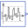

PartialNoisePartial noise generator |
Information
This information is part of the Modelica Standard Library maintained by the Modelica Association.
Partial base class of noise generators defining the common features of noise blocks.
Parameters (8)
| samplePeriod |
Value: Type: Period (s) Description: Period for sampling the raw random numbers |
|---|---|
| enableNoise |
Value: globalSeed.enableNoise Type: Boolean Description: =true: y = noise, otherwise y = y_off |
| y_off |
Value: 0.0 Type: Real Description: y = y_off if enableNoise=false (or time |
| useGlobalSeed |
Value: true Type: Boolean Description: = true: use global seed, otherwise ignore it |
| useAutomaticLocalSeed |
Value: true Type: Boolean Description: = true: use automatic local seed, otherwise use fixedLocalSeed |
| fixedLocalSeed |
Value: 1 Type: Integer Description: Local seed (any Integer number) |
| startTime |
Value: 0.0 Type: Time (s) Description: Start time for sampling the raw random numbers |
| localSeed |
Value: Type: Integer Description: The actual localSeed |
Connectors (1)
| y |
Type: RealOutput Description: Connector of Real output signal |
|---|
Components (1)
| globalSeed |
Type: GlobalSeed Description: Definition of global seed via inner/outer |
|---|
Extended by (4)
|
Modelica.Blocks.Noise
Noise generator to produce band-limited white noise with normal distribution |
|
|  |
Modelica.Blocks.Noise
Noise generator with truncated normal distribution |
|
Modelica.Blocks.Noise
Noise generator with normal distribution |
|
|
Modelica.Blocks.Noise
Noise generator with uniform distribution |